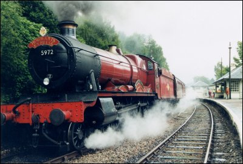
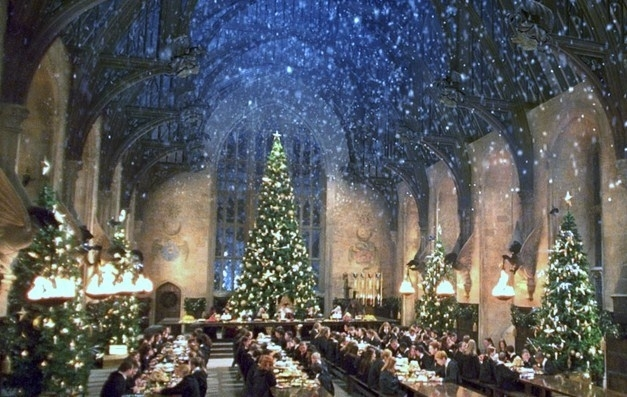
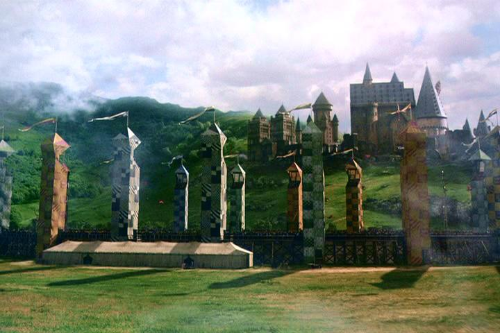
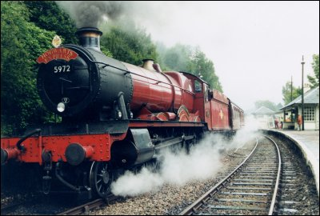
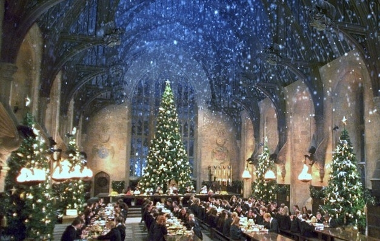
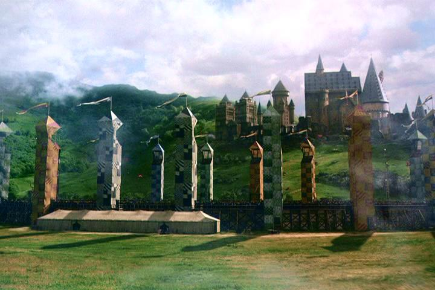

Hogwarts is located in Scotland.The school has numerous charms and spells on and around it that make it impossible for a Muggle to locate it. The castle has extensive grounds with sloping lawns, flowerbeds and vegetable patches, the Black Lake, a Forbidden Forest, several greenhouses and other outbuildings, and a full-size Quidditch pitch. There is also an owlery, which houses all the owls owned by the school and those owned by students. It should be noted that some rooms in the school tend to "move around", and so do the stairs in the grand staircase. Witches and wizards cannot Apparate or Disapparate in Hogwarts grounds, except when the Headmaster lifts the enchantment, whether only in certain areas or for the entire campus, so as to make the school less vulnerable when it serves the headmaster to allow Apparition.



Hogwarts is located in Scotland.The school has numerous charms and spells on and around it that make it impossible for a Muggle to locate it. The castle has extensive grounds with sloping lawns, flowerbeds and vegetable patches, the Black Lake, a Forbidden Forest, several greenhouses and other outbuildings, and a full-size Quidditch pitch. There is also an owlery, which houses all the owls owned by the school and those owned by students. It should be noted that some rooms in the school tend to "move around", and so do the stairs in the grand staircase. Witches and wizards cannot Apparate or Disapparate in Hogwarts grounds, except when the Headmaster lifts the enchantment, whether only in certain areas or for the entire campus, so as to make the school less vulnerable when it serves the headmaster to allow Apparition.
The Headmaster or Headmistress, assisted by a Deputy Headmaster or Headmistress, undertakes management of the school. The Head is answerable to the twelve-member Board of Governors.